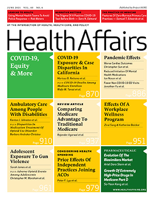
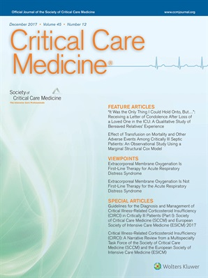
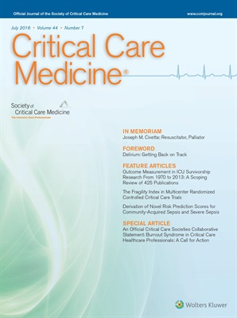
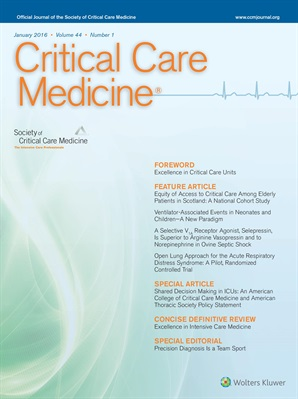
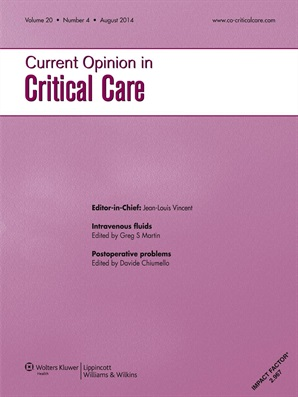

Peer-Reviewed Publications
2021
Lyu PF, Chernew ME, McWilliams JM (2021). Soft Consolidation In Medicare ACOs: Potential For Higher Prices Without Mergers Or Acquisitions. Health Affairs, 40(6), 979-988.
2017
Holder AL, Overton E, Lyu P, Kempker JA, Nemati S, Razmi F, Martin GS, Buchman TG, Murphy DJ (2017). Serial Daily Organ Failure Assessment Beyond ICU Day 5 Does Not Independently Add Precision to ICU Risk-of-Death Prediction. Crit Care Med, 45(12), 2014-22.
Sudduth CL, Overton EC, Lyu PF, Rimawi RH, Buchman TG (2017). Filtering authentic sepsis arising in the ICU using administrative codes coupled to a SIRS screening protocol. J Crit Care, 39(June), 220-224.
2016
Lyu PF, Hockenberry JM, Gaydos LM, Howard DH, Buchman TG, Murphy DJ (2016). Impact of a Sequential Intervention on Albumin Utilization in Critical Care. Crit Care Med, 44(7), 1307-13.
Murphy DJ, Lyu PF, Gregg SR, Martin GS, Hockenberry JM, Coopersmith CM, Sterling M, Buchman TG, Sevransky J (2016). Using Incentives to Improve Resource Utilization: A Quasi-Experimental Evaluation of an ICU Quality Improvement Program. Crit Care Med, 44(1), 162-70.
2014
Lyu PF, Murphy DJ (2014). Economics of fluid therapy in critically ill patients. Curr Opin Crit Care, 20(4), 402-407.